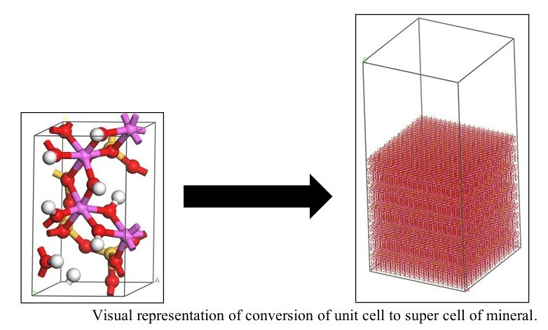
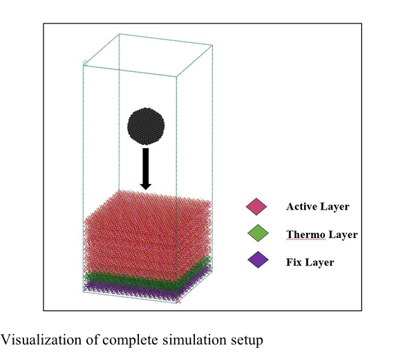
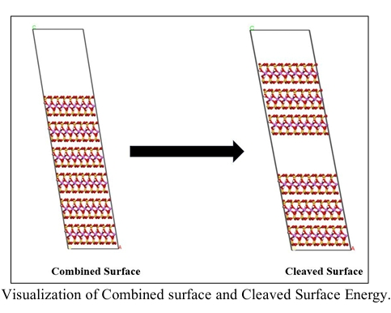
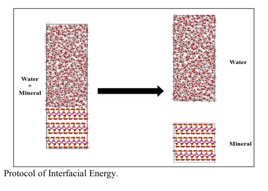
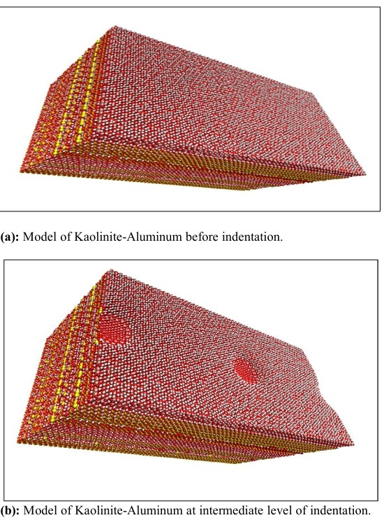
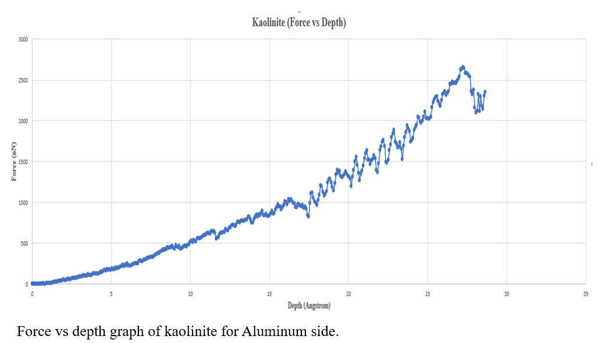

Project Overview
This Final Year Project performs a numerical investigation into the mechanical properties of clay minerals — Kaolinite (Aluminum side and Silicon side) and Pyrophyllite — using Molecular Dynamics (MD) simulation. Virtual atomistic models were subjected to nanoindentation at the nanoscale to derive hardness, Young's modulus, surface energy, and interfacial energy from first principles.
Clay minerals are critical materials in construction, ceramics, and geotechnics. Despite extensive research, gaps remain in understanding how structural variations and environmental conditions influence mechanical behaviour at the nanoscale. MD simulation was selected over conventional FEA because it captures atomic-level interactions — dislocation motion, crack initiation, and surface chemistry — without requiring pre-defined bulk material inputs.

Unit cell expanded to supercell in Materials Studio — minimises boundary effects for accurate simulation.
Simulation Methodology
The simulation pipeline ran across three phases. First, atomistic models were built in Materials Studio using crystallographic data — unit cells were expanded into supercells with periodic boundary conditions to minimise edge effects. The supercell was divided into three functional layers: a Fixed Layer at the bottom (atoms frozen to prevent rigid body translation), a Thermostat Layer in the middle (Langevin thermostat maintaining room temperature), and an Active Layer at the top that directly interacts with the spherical indenter.
The LAMMPS input script — written entirely from scratch — ran a two-stage simulation. The NVT equilibration stage stabilised the model at room temperature. The NVE nanoindentation stage then descended a spherical indenter at constant velocity using the CVFF force field with Lennard-Jones and long-range Coulombic interactions.

Complete nanoindentation simulation setup — spherical indenter (black), Active Layer (pink), Thermostat Layer (green), Fixed Layer (purple).
Surface & Interfacial Energy
Beyond mechanical properties, the study computed surface energy and interfacial energy for each mineral. Surface energy quantifies the cohesiveness of a material — the energy required to create a new surface by breaking atomic bonds. Interfacial energy measures the excess energy at the boundary between the clay mineral and water, directly governing swelling risk and substrate compatibility.
Two separate simulation protocols were designed: a slab-cleavage model for surface energy, and a mineral-water separation model for interfacial energy. Both were computed from the energy difference between combined and isolated system states.

Surface energy protocol — combined slab cleaved into two surfaces; energy difference divided by twice the area gives surface energy.

Interfacial energy protocol — mineral-water combined system separated into isolated components; boundary energy computed from the energy difference.
Results & Key Findings
Force vs Depth data was extracted from the LAMMPS output and plotted in Excel and AnyChart. Hertz contact theory was applied to derive mechanical properties from the curves. Kaolinite-Al showed a steeper slope with a distinct peak before yielding — indicating elastic recovery and higher resistance to plastic deformation. Kaolinite-Si produced a softer response at the same indentation depth, confirming directional anisotropy between the Al-octahedral and Si-tetrahedral faces. Pyrophyllite exhibited a smooth, high-force plastic curve with no crack propagation.
Final results confirmed that Pyrophyllite is the strongest and stiffest mineral studied — with Young's modulus and hardness nearly double those of kaolinite. Kaolinite's Al-side hardness exceeded its Si-side, demonstrating clear structural anisotropy. All values were validated against published literature, confirming the accuracy of the CVFF force field for these clay systems.

OVITO post-processing — Kaolinite-Al supercell before indentation (top) and at intermediate depth with visible atomic deformation crater (bottom).

Force vs Depth curve — Kaolinite (Al side). Distinct elastic region, peak force, and post-yield drop confirm expected mechanical behaviour.
Leadership & Team Management
As Group Leader of a four-member team, all coordination with the FYP supervisor and FYP Coordinator was handled independently — scheduling regular progress meetings, managing documentation submissions, and ensuring full compliance with department requirements. Tasks were assigned to each team member with progress tracked continuously throughout the project cycle.
A deliberate approach was taken to always remain two steps ahead of the team technically, enabling effective guidance on queries and problems as they arose. All documentation — methodology chapters, report compilation, milestone submissions — was personally authored and compiled.